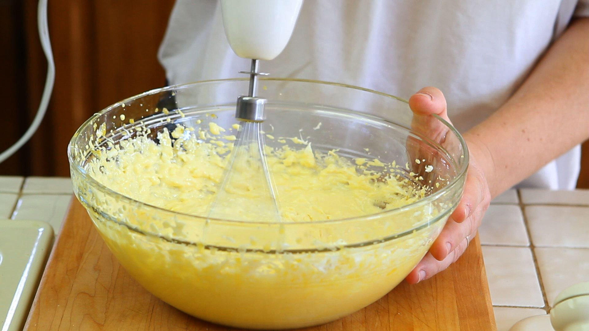

Step 2: Beat egg yolks, Marsala, and remaining 1/2 cup sugar in a metal bowl set over a saucepan of barely simmering water using a whisk or handheld electric mixer until tripled in volume, 5 to 8 minutes. Remove bowl from heat. Beat in mascarpone until just combined.
